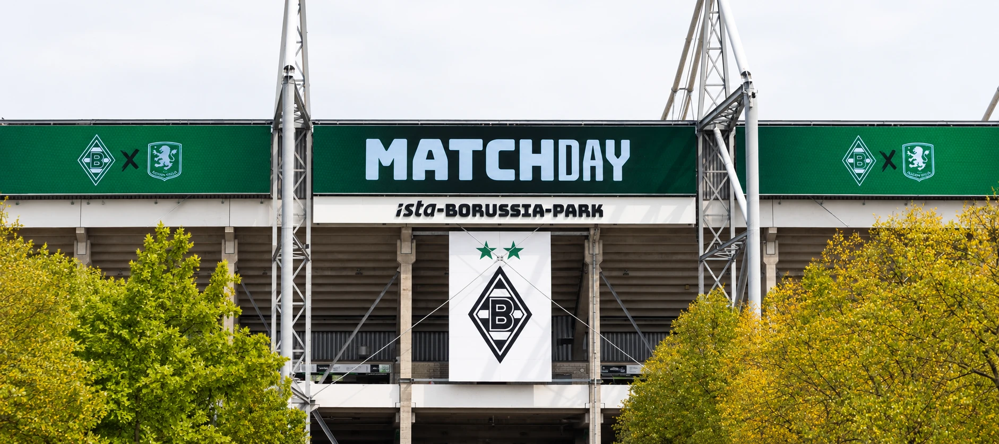

600 m² of LED on the ista-Borussia-Park facade
Borussia Mönchengladbach has had a new LED screen on the stadium facade since this year: over 600 m² of display, spread across several surfaces.

What's on display
The screen is made up of modular LED panels that fit together seamlessly. As they're installed outdoors, they have to withstand all conditions: IP65 rating, frost, storms and sunshine. The screen is designed to remain clearly legible even in direct sunlight, with a pixel pitch of P10, tailored to the viewing distance of the supporters.
And the lighting too
The screen isn't the only thing that happened at ista-Borussia-Park this year. In mid-2025, The Stadium Experience also installed the new stadium lighting: fully LED and compliant with UEFA Level A Elite, the highest UEFA standard. It comes down to 180 LED stadium lights and 136 RGB fixtures, connected by over 1.2 kilometres of DMX cable.
The screen and the lighting are controlled by a single system.
First time in action
The result was unveiled for the first time during the friendly against Valencia on 2 August 2025, part of the club's 125th anniversary celebrations, with a light show. Borussia Mönchengladbach won 2-0.